Capítulo 1 El Turismo en el Mundo
1.1 Introducción
Este capítulo presenta las principales estadísticas del turismo a nivel mundial. Con información de la ONU Turismo, se incluyen los últimos datos disponibles acerca de las llegadas de turistas internacionales y los ingresos que estos generan en los países de destino, así como los principales países emisores de turistas y aquellos que más gasto generan por sus viajes. Se presentan estadísticas por región mundial y se profundiza en la región América y en América del Sur, en particular.
Es importante destacar que la información relativa al turismo internacional se presenta de distintas formas en los países. A modo de ejemplo, algunos países informan la cantidad de visitantes que visitan el país, es decir, se incluyen aquellas personas que pasan una noche en él (turistas) y aquellas que no lo hacen (excursionistas). Otros, en cambio, solo miden la cantidad de turistas (visitantes con pernocte). Un tercer grupo publica solamente estadísticas sobre aquellos turistas que visitan establecimientos turísticos colectivos. En el presente capítulo se procura mostrar la información correspondiente al total de turistas, es decir, visitantes que pernoctan.
Asimismo, es común encontrar, en las estadísticas por país, datos faltantes de algún país en particular, especialmente para los años más próximos. Por otra parte, las mediciones más recientes pueden tener modificaciones en períodos posteriores.
1.2 Llegadas de turistas internacionales
En el año 2023 se estimaron 1304 millones de turistas internacionales a nivel mundial. Representa un incremento del 33,8% respecto de 2022. En comparación con 2019, el valor estuvo un 11% por debajo.
Figura 1.1: Llegadas de turistas internacionales (en millones) y variación interanual. Años 2005-2023.
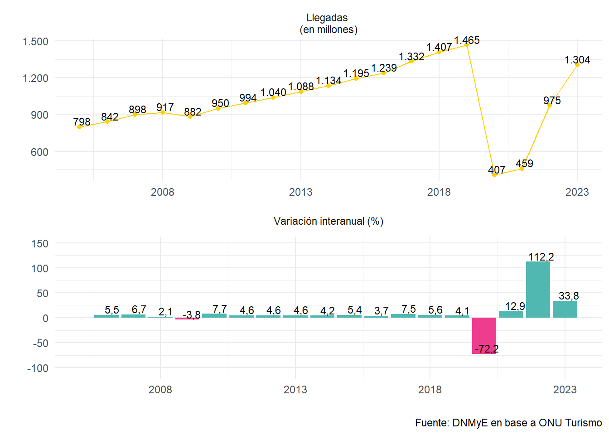La apertura a nivel regional de las llegadas de turistas internacionales muestra que la región de Europa fue la más visitada, con 707,86 millones de turistas en el año 2023; en segundo lugar se encontró Asia y el Pacífico, con 237,24 millones de turistas en el año; el tercer lugar lo ocupó América, con 200,26 millones de turistas; la cuarta posición fue para Oriente Medio, con 92,28 millones; por último, la región de África recibió 66,36 millones.
Figura 1.2: Llegadas de turistas internacionales por región. En millones. Años 2005-2023.
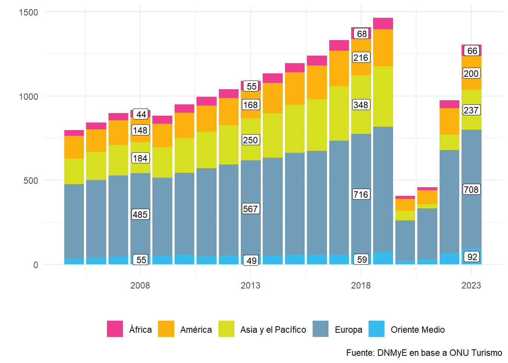Las llegadas de turistas internacionales se incrementaron un 154,2% interanual en Asia y el Pacífico. En África, en tanto, aumentaron un 41,3%. La llegadas de turistas crecieron un 36,2% en la región Oriente Medio. América, por su parte, vio incrementadas sus llegadas de turistas en un 27,4%. La peor performance la tuvo Europa, con una variación del 16,1 % respecto de 2022.
Figura 1.3: Variación interanual de las llegadas de turistas internacionales por región. Años 2005-2023.
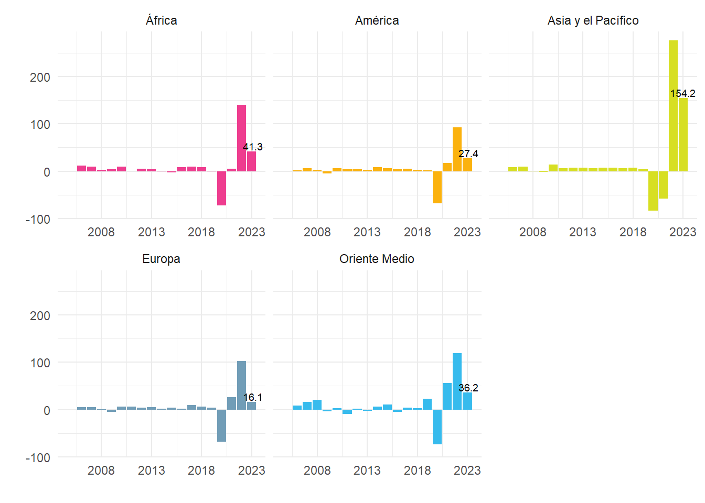A continuación se presenta una tabla con las llegadas de turistas internacionales para cada subregión dentro de las regiones antes mencionadas.
| 2000 | 2005 | 2010 | 2015 | 2022 | 2023 | ||||
|---|---|---|---|---|---|---|---|---|---|
| llegadas | Var. i.a. (%) | Var. % vs. 2019 | Participación (%) | ||||||
| Europa | |||||||||
| Eur. Meridional/Medit. | 140,8 | 153,0 | 173,3 | 231,4 | 265,5 | 308,5 | 16,2% | 1,5% | 23,6% |
| Europa Occidental | 139,7 | 141,7 | 154,4 | 181,5 | 182,8 | 208,4 | 14,0% | 1,6% | 16,0% |
| Eur. Central/Oriental | 69,4 | 87,5 | 98,9 | 122,4 | 94,1 | 112,3 | 19,4% | −26,0% | 8,6% |
| Europa del Norte | 43,7 | 57,3 | 62,8 | 69,8 | 67,1 | 78,3 | 16,6% | −6,5% | 6,0% |
| América | |||||||||
| América del Norte | 91,6 | 89,9 | 99,5 | 127,5 | 101,9 | 126,8 | 24,4% | −13,5% | 9,7% |
| El Caribe | 17,1 | 18,8 | 19,5 | 24,1 | 23,6 | 28,1 | 19,5% | 7,0% | 2,2% |
| América del Sur | 15,3 | 18,3 | 23,2 | 31,9 | 22,4 | 33,6 | 49,9% | −5,1% | 2,6% |
| América Central | 4,3 | 6,3 | 7,9 | 10,2 | 9,3 | 11,5 | 24,5% | 5,8% | 0,9% |
| Oriente Medio | |||||||||
| Oriente Medio | 24,4 | 36,3 | 54,7 | 58,1 | 67,8 | 93,5 | 37,8% | 28,0% | 7,2% |
| Asia y el Pacífico | |||||||||
| Asia del Sudeste | 35,6 | 48,5 | 70,5 | 104,2 | 43,3 | 99,0 | 128,7% | −28,3% | 7,6% |
| Asia Meridional | 6,1 | 8,1 | 12,1 | 23,5 | 23,8 | 30,9 | 30,0% | −8,6% | 2,4% |
| Asia del Nordeste | 58,4 | 85,9 | 111,5 | 142,1 | 20,5 | 94,4 | 360,7% | −44,5% | 7,2% |
| Oceanía | 9,2 | 11,0 | 11,4 | 14,3 | 6,8 | 12,9 | 90,4% | −26,5% | 1,0% |
| África | |||||||||
| África Subsahariana | 17,7 | 21,5 | 30,7 | 35,6 | 27,8 | 39,5 | 41,8% | −8,6% | 3,0% |
| África del Norte | 10,2 | 13,9 | 19,7 | 18,0 | 19,1 | 26,9 | 40,8% | 5,0% | 2,1% |
| Fuente: DNMyE en base a ONU Turismo | |||||||||
En el año 2023, el país con mayor cantidad de llegadas de turistas fue Francia, con 100 millones, seguido de España (85,2 millones), Estados Unidos de América (66,5 millones) e Italia (57,2 millones).
Figura 1.4: Ranking de los 15 países que tuvieron mayor cantidad de turistas internacionales. Año 2023. Millones de turistas.
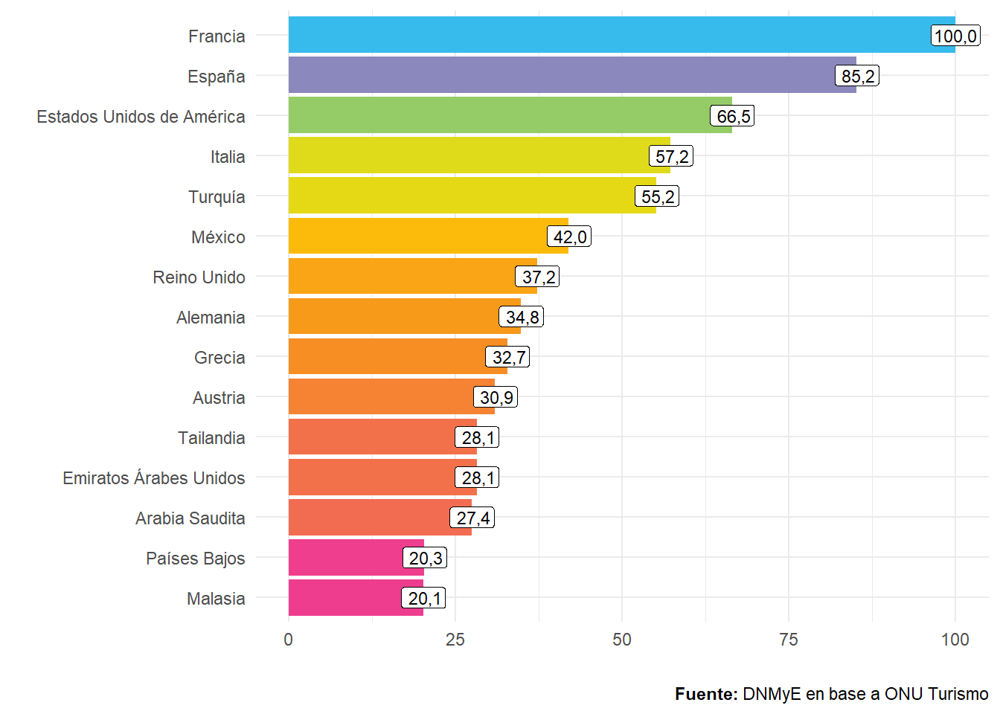Las llegadas de turistas internacionales en Francia crecieron 7,3%. En comparación con 2019, la variación fue de 10%. El siguiente país en magnitud fue España, que aumentó sus llegadas un 18,9% con respecto a 2022 (2% vs. 2019). Por su parte, las llegadas a Estados Unidos de América se elevaron un 30,7% (-16,3% vs. 2019).
| 2000 | 2005 | 2010 | 2015 | 2022 | 2023 | |||
|---|---|---|---|---|---|---|---|---|
| Llegadas | Var. i.a. (%) | Var. vs. 2019 (%) | ||||||
| Francia | 77,2 | 75,0 | 76,6 | 84,5 | 93,2 | 100,0 | 7,3% | 10,0% |
| España | 46,4 | 55,9 | 52,7 | 68,2 | 71,7 | 85,2 | 18,9% | 2,0% |
| Estados Unidos de América | 51,2 | 49,2 | 60,0 | 77,8 | 50,9 | 66,5 | 30,7% | −16,3% |
| Italia | 41,2 | 36,5 | 43,6 | 50,7 | 49,8 | 57,2 | 14,9% | −11,3% |
| Turquía | 9,6 | 20,3 | 31,4 | 39,5 | 50,5 | 55,2 | 9,3% | 7,8% |
| México | 20,6 | 21,9 | 23,3 | 32,1 | 38,3 | 42,0 | 9,4% | −6,8% |
| Reino Unido | 23,2 | 28,0 | 28,9 | 35,1 | 30,7 | 37,2 | 21,1% | −5,6% |
| Alemania | 19,0 | 21,5 | 23,9 | 31,2 | 28,5 | 34,8 | 22,3% | −1,1% |
| Grecia | 13,1 | 14,8 | 15,0 | 23,6 | 27,8 | 32,7 | 17,6% | 4,4% |
| Austria | 18,0 | 20,0 | 16,2 | 19,6 | 26,2 | 30,9 | 17,9% | 36,4% |
| Tailandia | 9,6 | 11,6 | 15,9 | 29,9 | 11,1 | 28,1 | 154,3% | −29,5% |
| Emiratos Árabes Unidos | 3,9 | 7,1 | /// | 16,8 | 22,6 | 28,1 | 24,3% | 30,6% |
| Arabia Saudita | 6,6 | 8,0 | 10,8 | 18,0 | 16,6 | 27,4 | 64,8% | 56,5% |
| Países Bajos | 10,0 | 10,0 | 8,7 | 11,8 | 16,1 | 20,3 | 26,4% | 30,9% |
| Malasia | 10,2 | 16,4 | 24,6 | 25,7 | 10,1 | 20,1 | 100,0% | −22,8% |
| Polonia | 17,4 | 15,2 | 12,5 | 16,7 | 15,9 | 19,0 | 19,1% | −10,2% |
| Canadá | 19,6 | 18,8 | 16,2 | 18,0 | 12,8 | 18,3 | 43,1% | −17,2% |
| Egipto | 5,1 | 8,2 | 14,1 | 9,1 | 11,7 | 14,9 | 27,9% | 15,8% |
| Marruecos | 4,3 | 5,8 | 9,3 | 10,2 | 10,9 | 14,5 | 33,6% | 12,3% |
| Afganistán | /// | /// | /// | /// | /// | /// | /// | /// |
| Fuente: DNMyE en base a ONU Turismo | ||||||||
Figura 1.5: Llegadas de turistas internacionales. En millones. Primeros 10 países. Años 2005-2023.
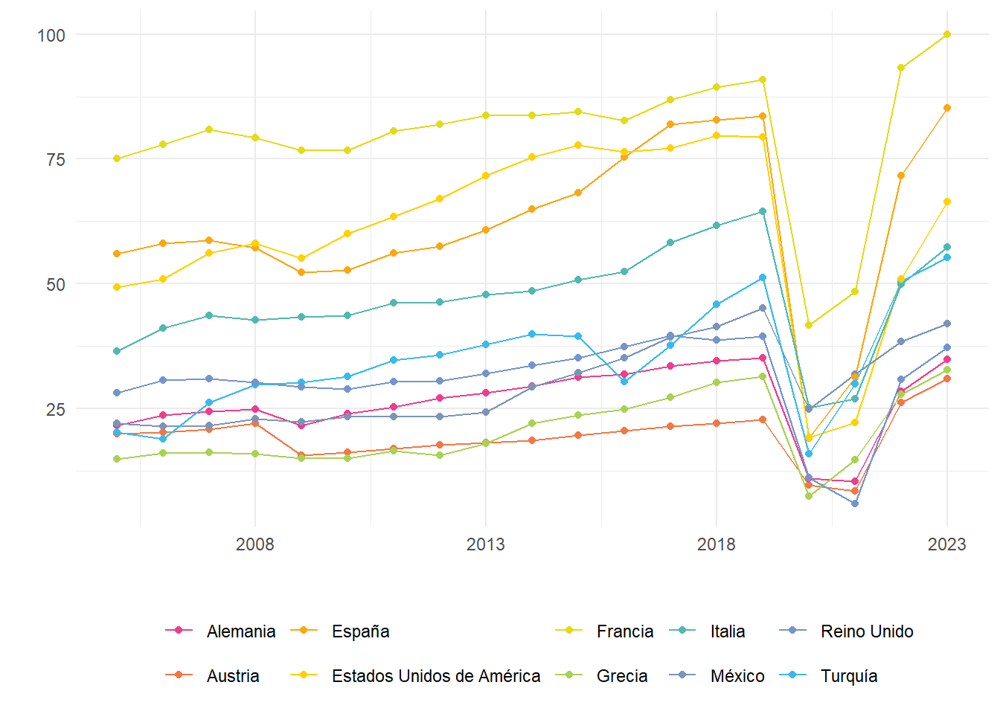1.3 Ingresos económicos
Los ingresos económicos por turismo internacional alcanzaron un total de 1514.9 mil millones de dólares, con un aumento del 34,6% respecto de 2022. A su vez, estuvieron un 1,9% por encima de 2019.
Figura 1.6: Ingresos por turismo internacional y variación interanual. Años 2005-2023.
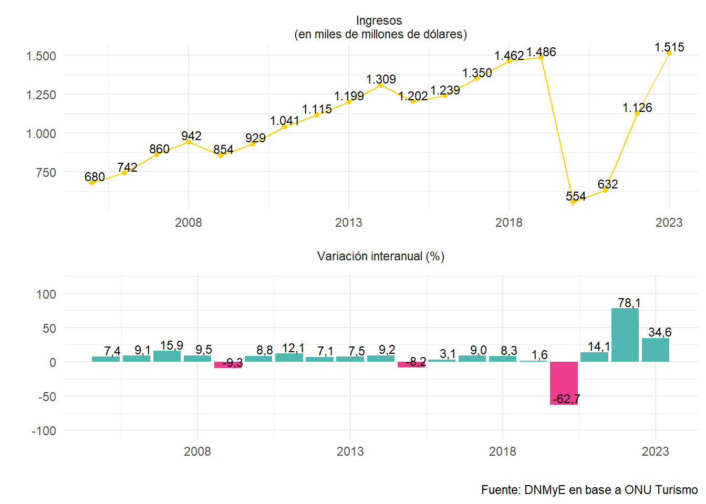A nivel regional, el mayor nivel de ingresos económicos se registró en Europa , con 659,6 mil millones de dólares en el año 2023 (19,4% respecto de 2022); en segundo lugar se encontró Asia y el Pacífico, con 346,9 mil millones (116,8% interanual); el tercer lugar lo ocupó América, con 333,1 mil millones (26,9%); la cuarta posición fue para Oriente Medio, con 137,4 mil millones (16,6%); por último, la región de África recibió 37,9 mil millones (13,5%).
Figura 1.7: Ingresos por turismo internacional por región. En miles de millones de dólares. Años 2005-2023.
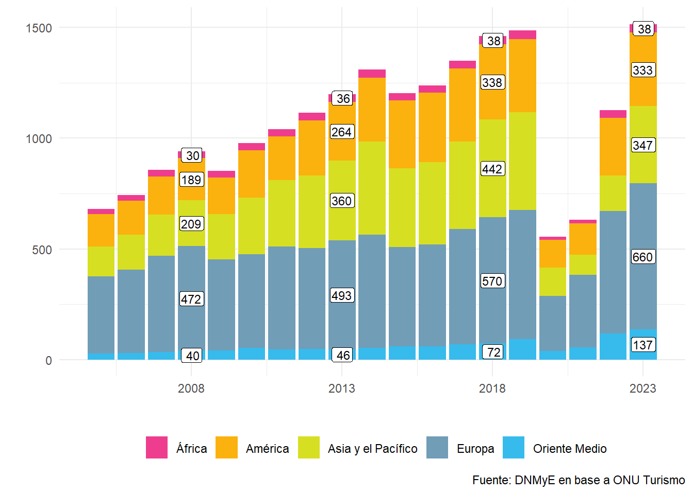A continuación se presenta una tabla con los ingresos económicos por turismo internacional para cada subregión dentro de las regiones antes mencionadas.
| 2000 | 2005 | 2010 | 2015 | 2022 | 2023 | ||||
|---|---|---|---|---|---|---|---|---|---|
| Ingresos | Var. i.a. (%) | Var. % vs. 2019 | Participación (%) | ||||||
| Europa | |||||||||
| Eur. Meridional/Medit. | 91,6 | 140,2 | 161,4 | 176,2 | 235,7 | 291,4 | 23,6% | 21,0% | /// |
| Europa Occidental | 83,7 | 123,2 | 152,4 | 145,7 | 157,2 | 189,3 | 20,4% | 5,7% | /// |
| Europa del Norte | 36,1 | 53,6 | 61,6 | 77,4 | 102,8 | 113,1 | 10,0% | 18,9% | /// |
| Eur. Central/Oriental | 20,3 | 32,7 | 48,3 | 50,4 | 56,7 | 69,0 | 21,7% | 0,0% | /// |
| América | |||||||||
| América del Norte | 102,0 | 107,7 | 164,8 | 239,7 | 199,0 | 258,3 | 29,8% | 1,9% | /// |
| El Caribe | 17,5 | 21,0 | 23,0 | 28,5 | 34,6 | 40,4 | 16,8% | 15,4% | /// |
| América del Sur | 9,2 | 12,4 | 20,5 | 26,3 | 22,8 | 31,5 | 38,2% | 6,4% | /// |
| América Central | 3,0 | 4,5 | 6,9 | 11,4 | 13,2 | 16,5 | 25,0% | 31,0% | /// |
| Oriente Medio | |||||||||
| Oriente Medio | 16,8 | 26,6 | 52,1 | 58,7 | 117,8 | 137,4 | 16,6% | 50,2% | /// |
| Asia y el Pacífico | |||||||||
| Asia del Sudeste | 26,8 | 35,0 | 68,5 | 108,6 | 49,5 | 102,9 | 107,9% | −30,0% | /// |
| Asia del Nordeste | 39,4 | 65,0 | 123,0 | 167,1 | 49,1 | 141,5 | 188,2% | −24,4% | /// |
| Oceanía | 14,3 | 25,9 | 42,8 | 47,7 | 30,9 | 57,9 | 87,4% | −5,7% | /// |
| Asia Meridional | 4,8 | 9,4 | 20,1 | 31,6 | 30,4 | 44,7 | 47,0% | −2,2% | /// |
| África | |||||||||
| África Subsahariana | 6,5 | 15,0 | 21,5 | 23,7 | 21,0 | /// | /// | /// | /// |
| África del Norte | 3,8 | 7,0 | 9,7 | 8,9 | 12,5 | 14,0 | 12,0% | 25,0% | /// |
| Fuente: DNMyE en base a ONU Turismo | |||||||||
El país con mayores ingresos económicos por turismo internacional en 2023 fue Estados Unidos de América, con 189.100 millones de dólares de gasto de viajes de turistas internacionales; el segundo puesto lo ocupó España, con 92.000 millones de dólares; le siguen Reino Unido (US$ 73.900 millones), Francia (US$ 71.200 millones) e Italia (US$ 55.900 millones).
Figura 1.8: Ranking de los primeros 15 países por ingresos económicos por turismo internacional (viajes). Año 2023. Miles de millones de dólares.
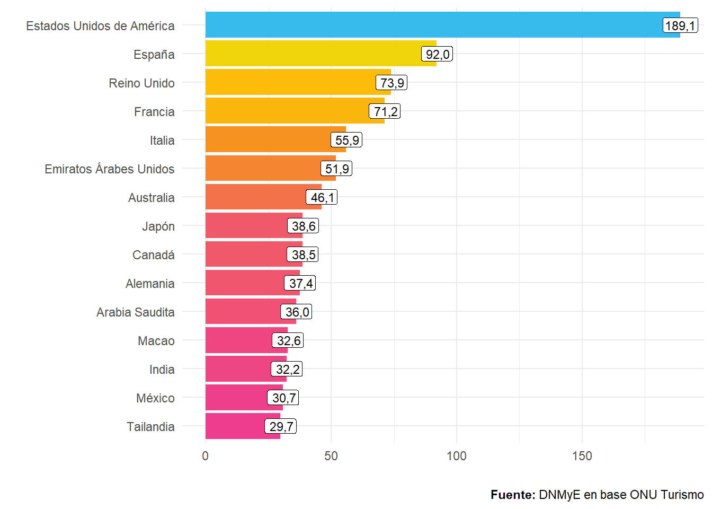| 2000 | 2005 | 2010 | 2015 | 2022 | 2023 | |||
|---|---|---|---|---|---|---|---|---|
| Ingresos | Var. i.a. (%) | Var. vs. 2019 (%) | ||||||
| Estados Unidos de América | 96,9 | 93,4 | 130,3 | 192,6 | 142,9 | 189,1 | 32,3% | −5,0% |
| España | 31,5 | 52,0 | 58,3 | 62,4 | 72,9 | 92,0 | 26,2% | 15,6% |
| Reino Unido | 23,6 | 34,3 | 38,6 | 55,8 | 68,2 | 73,9 | 8,4% | 26,5% |
| Francia | 32,9 | 43,9 | 46,5 | 58,3 | 59,7 | 71,2 | 19,3% | 12,3% |
| Italia | 27,5 | 35,3 | 38,4 | 39,4 | 44,3 | 55,9 | 26,2% | 12,9% |
| Emiratos Árabes Unidos | /// | /// | /// | 20,5 | 49,3 | 51,9 | 5,3% | 68,9% |
| Australia | 9,4 | 16,8 | 28,5 | 34,3 | 24,6 | 46,1 | 87,4% | 0,8% |
| Japón | 3,4 | 12,4 | 13,2 | 25,0 | 9,2 | 38,6 | 319,6% | −16,2% |
| Canadá | 10,8 | 13,7 | 15,8 | 20,3 | 28,1 | 38,5 | 37,0% | 29,2% |
| Alemania | 18,6 | 29,1 | 34,6 | 36,9 | 31,9 | 37,4 | 17,2% | −10,5% |
| Arabia Saudita | /// | 4,6 | 6,7 | 10,1 | 25,2 | 36,0 | 42,9% | 119,1% |
| Macao | /// | 6,9 | 22,3 | 31,1 | /// | 32,6 | /// | −19,7% |
| India | 3,5 | 7,5 | 14,5 | 21,0 | 21,4 | 32,2 | 50,5% | 4,8% |
| México | 8,3 | 11,8 | 12,0 | 17,7 | 28,0 | 30,7 | 9,6% | 24,9% |
| Tailandia | 7,5 | 9,6 | 20,1 | 41,2 | 14,9 | 29,7 | 99,3% | −50,3% |
| Portugal | 5,2 | 7,7 | 10,0 | 12,9 | 22,3 | 27,2 | 22,0% | 33,0% |
| Austria | 9,9 | 16,2 | 18,8 | 18,3 | 19,9 | 25,0 | 25,6% | 8,8% |
| China | 16,2 | 29,3 | 45,8 | 45,0 | 13,5 | 24,8 | 83,7% | −30,8% |
| Grecia | 9,2 | 13,3 | 12,5 | 15,7 | 18,6 | 22,3 | 19,9% | 10,0% |
| Afganistán | /// | /// | 0,1 | 0,1 | /// | /// | /// | /// |
| Fuente: DNMyE en base a ONU Turismo | ||||||||
Figura 1.9: Ingresos por turismo internacional (viajes). En miles de millones de dólares.
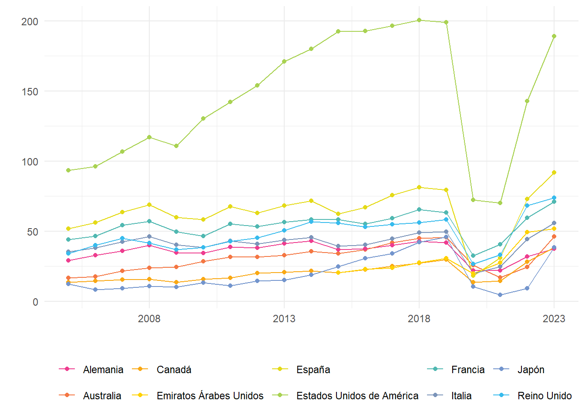1.4 Egresos económicos
El país con mayor nivel de gasto turístico en el exterior, en el año 2023, fue China, con egresos por 196,5 mil millones de dólares; el segundo puesto lo ocupó Estados Unidos de América, con 158,7 mil millones de dólares; Alemania se ubicó en tercer lugar con egresos por US$115,4 mil millones; la cuarta posición la ocupó Reino Unido (US$100,9 mil millones); en el quinto lugar estuvo Francia (US$56 mil millones).
Figura 1.10: Ranking de egresos económicos por turismo internacional (viajes). Año 2023. Miles de millones de dólares. Primeros 15 países.
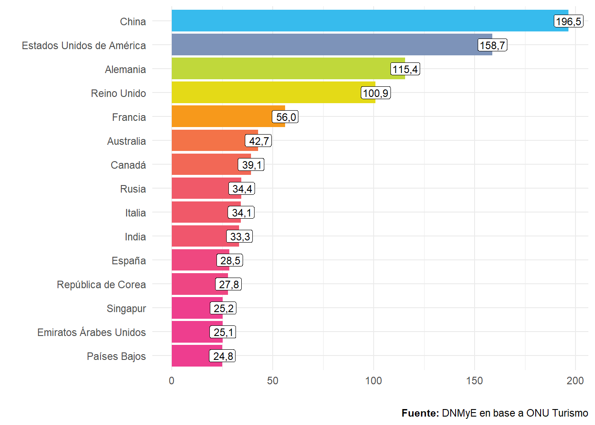| 2000 | 2005 | 2010 | 2015 | 2023 | Egresos | |||
|---|---|---|---|---|---|---|---|---|
| 2022 | Var. i.a. (%) | Var. vs. 2019 (%) | ||||||
| China | 13,1 | 21,8 | 54,9 | 249,8 | 114,8 | 71,1% | −22,8% | 196,5 |
| Estados Unidos de América | 64,2 | 74,1 | 85,2 | 102,7 | 118,6 | 33,8% | 20,0% | 158,7 |
| Alemania | 52,8 | 74,2 | 77,6 | 77,5 | 89,7 | 28,7% | 23,9% | 115,5 |
| Reino Unido | 42,1 | 66,2 | 65,7 | 77,5 | 81,7 | 23,5% | 17,4% | 100,9 |
| Francia | 22,5 | 31,3 | 38,3 | 39,5 | 46,6 | 20,2% | 10,8% | 56,0 |
| Australia | 6,4 | 11,7 | 22,6 | 29,2 | 19,6 | 117,8% | 18,7% | 42,7 |
| Canadá | 12,4 | 18,0 | 30,0 | 34,0 | 28,6 | 36,5% | 10,6% | 39,1 |
| Rusia | 8,8 | 17,0 | 26,7 | 34,9 | 20,8 | 65,4% | −4,9% | 34,4 |
| Italia | 15,7 | 22,4 | 26,9 | 24,4 | 26,3 | 29,8% | 12,7% | 34,1 |
| India | 2,7 | 6,2 | 10,5 | 14,8 | 25,9 | 28,8% | 45,5% | 33,3 |
| España | 6,0 | 15,2 | 16,9 | 17,4 | 22,2 | 28,0% | 2,6% | 28,5 |
| República de Corea | 7,1 | 15,4 | 18,8 | 25,3 | 20,8 | 33,7% | −15,0% | 27,8 |
| Singapur | 4,5 | 10,1 | 18,7 | 23,7 | 15,0 | 68,4% | −7,7% | 25,2 |
| Emiratos Árabes Unidos | /// | /// | /// | 13,3 | 20,2 | 24,1% | 70,7% | 25,1 |
| Países Bajos | 12,2 | 13,7 | 19,0 | 18,0 | 18,7 | 32,7% | 21,2% | 24,8 |
| Arabia Saudita | /// | 9,1 | 21,1 | 19,3 | 15,9 | 45,7% | 53,1% | 23,2 |
| Bélgica | 9,4 | 14,9 | 18,9 | 13,7 | 20,2 | 14,1% | 23,8% | 23,1 |
| Hong Kong | 12,5 | 13,3 | 17,4 | 23,1 | 5,5 | 315,1% | −15,2% | 22,8 |
| Noruega | 4,6 | 9,7 | 13,5 | 15,3 | 14,2 | 58,7% | 39,6% | 22,5 |
| Suiza | 5,7 | 9,3 | 11,8 | 17,2 | 18,9 | 18,9% | 19,3% | 22,5 |
| Fuente: DNMyE en base a ONU Turismo | ||||||||
Figura 1.11: Egresos por turismo internacional (viajes). En miles de millones de dólares. Años 2005-2023.
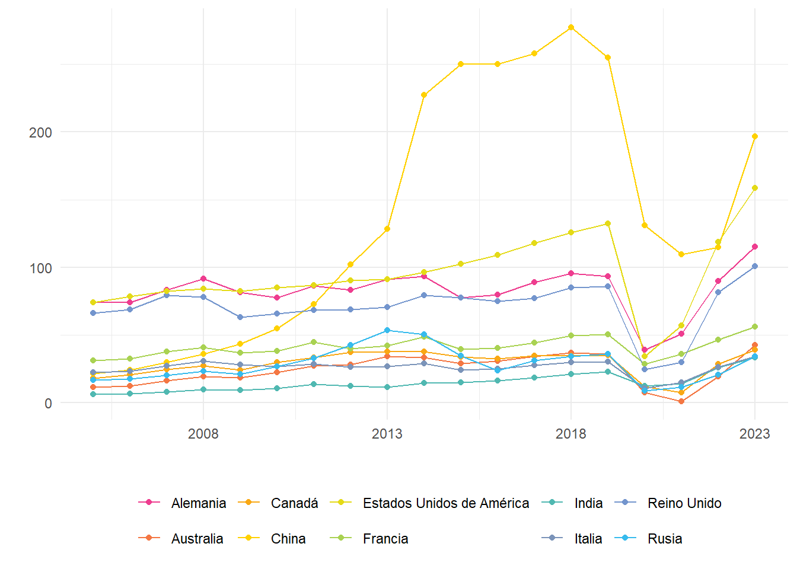1.5 Panorama Regional
A continuación se presenta la información de turismo internacional haciendo foco en los países del continente americano en su conjunto y, en particular, en la subregión de América del Sur.
1.5.1 Llegadas de turistas
Al interior del continente americano, la región con más llegadas de turistas internacionales en 2023 fue América del Norte, con 126,78 millones de turistas; el segundo lugar lo ocupó América del Sur, con 33,61 millones; la tercera posición fue para El Caribe (28,15 millones); por último, América Central recibió 11,53 millones de turistas en el año.
Figura 1.12: América: llegadas de turistas internacionales por subregión. En millones. Años 2005-2023.
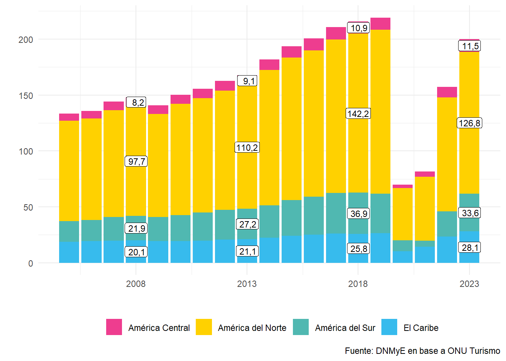En América, el país que recibió más turistas en 2023 fue Estados Unidos, con 50,9 millones; en segundo lugar se ubicó México, con 38,3 millones; detrás de él estuvo Canadá, con 12,8 millones; el cuarto lugar lo ocupó Rep. Dominicana, con 7,2 millones; la quinta posición fue para Colombia, con 4,5 millones de llegadas en 2023
| 2005 | 2010 | 2015 | 2022 | 2023 | |||
|---|---|---|---|---|---|---|---|
| Llegadas | Var. i.a. (%) | Var. vs. 2019 (%) | |||||
| Estados Unidos | 49,2 | 60,0 | 77,5 | 50,9 | 66,5 | 30,7% | −16,3% |
| México | 21,9 | 23,3 | 32,1 | 38,3 | 42,0 | 9,4% | −6,8% |
| Canadá | 18,8 | 16,2 | 18,0 | 12,8 | 18,3 | 43,1% | −17,2% |
| Rep. Dominicana | 3,7 | 4,1 | 5,6 | 7,2 | 8,1 | 12,6% | 25,0% |
| Argentina | 3,8 | 5,3 | 5,7 | 3,9 | 7,3 | 87,4% | −1,5% |
| Brasil | 5,4 | 5,2 | 6,3 | 3,6 | 5,9 | 62,8% | −7,0% |
| Colombia | 0,9 | 2,4 | 3,0 | 4,5 | 5,6 | 24,6% | 35,0% |
| Puerto Rico | 3,7 | 3,2 | 3,5 | 4,2 | 5,0 | 19,4% | 58,8% |
| Uruguay | 1,8 | 2,3 | 2,8 | 2,5 | 3,8 | 55,5% | 25,7% |
| Chile | 2,0 | 2,8 | 4,5 | 2,0 | 3,7 | 83,7% | −17,4% |
| Jamaica | 1,5 | 1,9 | 2,1 | 2,5 | 2,9 | 16,1% | 7,4% |
| Costa Rica | 1,7 | 2,1 | 2,7 | 2,4 | 2,8 | 17,0% | −12,4% |
| Perú | 1,6 | 2,3 | 3,5 | 2,0 | 2,5 | 25,4% | −42,4% |
| El Salvador | 1,1 | 1,1 | 1,4 | 1,9 | 2,5 | 31,2% | 40,4% |
| Guatemala | /// | 1,1 | 1,5 | 1,5 | 2,0 | 35,6% | 15,3% |
| Panamá | 0,7 | 1,3 | 2,1 | 1,5 | 1,9 | 25,5% | 6,7% |
| Bahamas | 1,6 | 1,4 | 1,5 | 1,4 | 1,8 | 24,8% | 0,3% |
| Ecuador | 0,9 | 1,0 | 1,5 | 1,3 | 1,4 | 12,6% | −32,2% |
| Aruba | 0,7 | 0,8 | 1,2 | 1,1 | 1,3 | 14,5% | 12,6% |
| Bolivia | 0,5 | 0,7 | 0,9 | 0,7 | 1,0 | 40,3% | −18,5% |
| Fuente: DNMyE en base a ONU Turismo | |||||||
El subcontinente América del Sur tuvo a Argentina como el país con más llegadas de turistas internacionales en 2023 (7,3 millones de turistas); por detrás se ubicó Brasil, con 5,9 millones; en tercera posición estuvo Colombia, con 5,6 millones; el cuarto puesto fue para Uruguay (3,8 millones); Chile se ubicó en la quinta posición, con 3,7 millones de llegadas de turistas internacionales en 2023.
Figura 1.13: América del Sur: llegadas de turistas internacionales. Año 2023. Millones de turistas
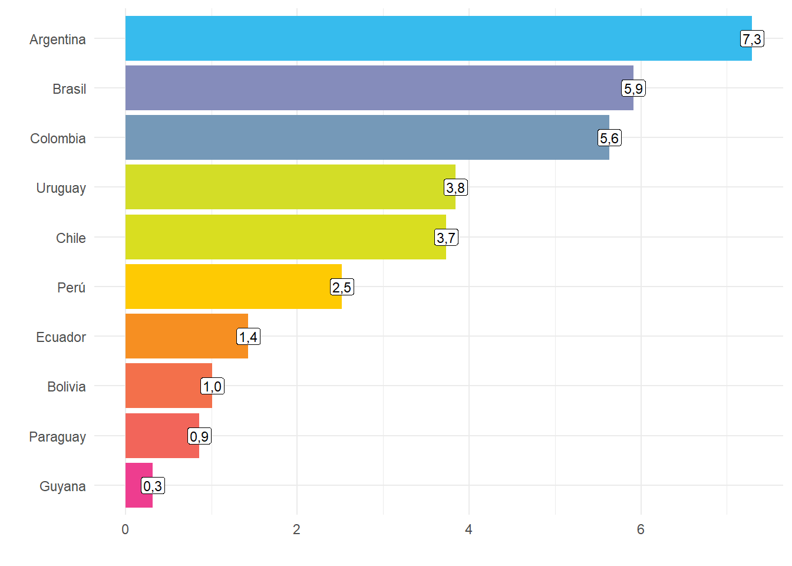Figura 1.14: América del Sur: llegadas de turistas internacionales. En millones. Años 2005-2023.
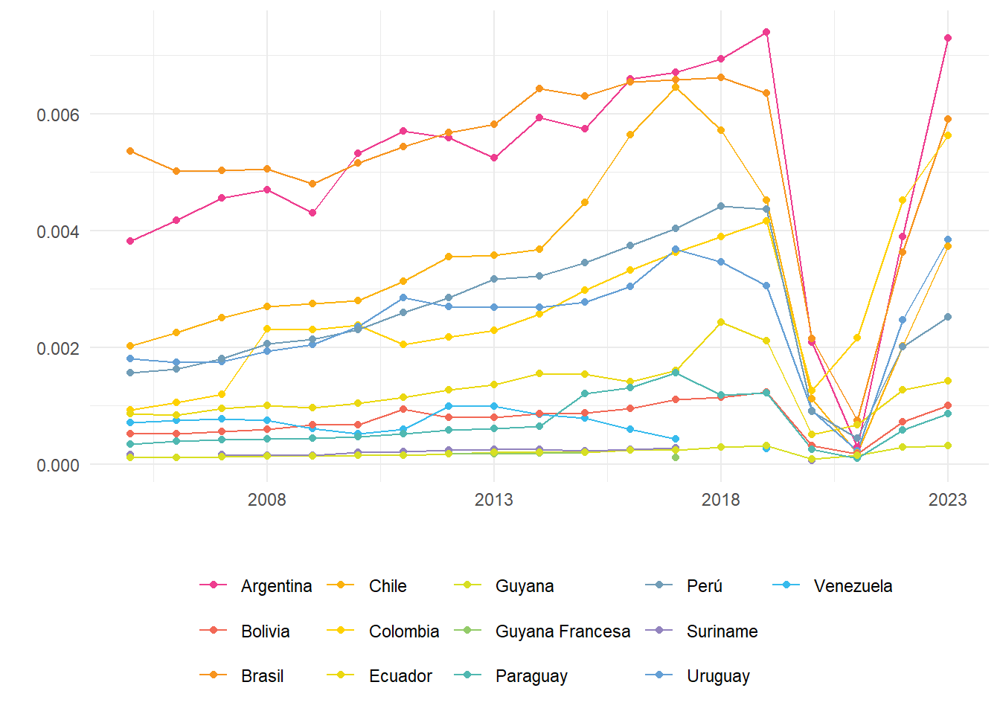1.5.2 Ingresos económicos
Los ingresos económicos en el continente americano sumaron 333,1 mil millones de dólares en 2023. América del Norte recibió ingresos por 258,3 mil millones de dólares. Por su parte, en El Caribe ingresaron US$ 40,4 mil millones por ese concepto. Los ingresos de América del Sur fueron de US$ 31,5 mil millones. Por último, América Central recibió US$ 16,5 mil millones.
Figura 1.15: América: ingresos por turismo internacional por subregión. En miles de millones de dólares. Años 2005-2023.
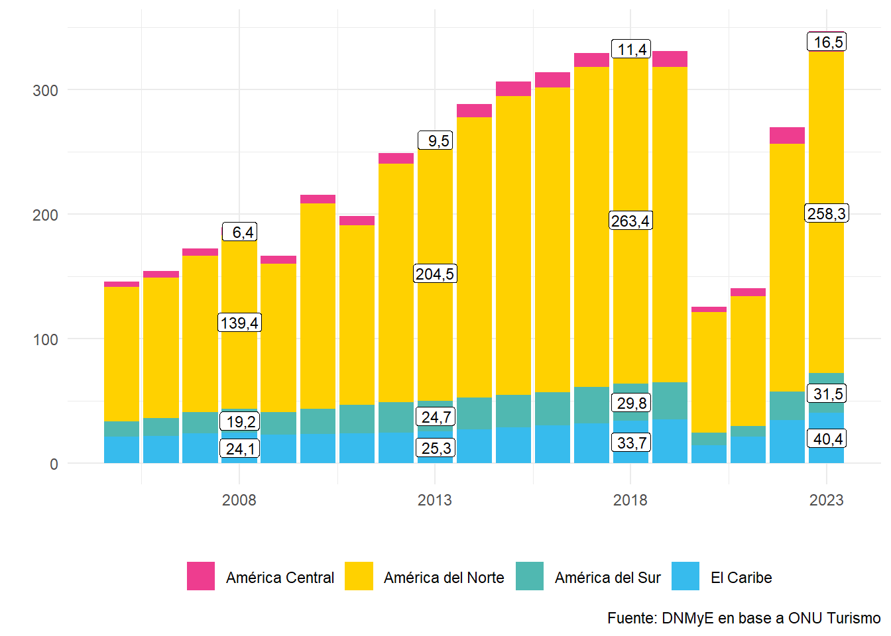El país del continente americano con mayor cantidad de ingresos económicos por turismo en 2023 fue Estados Unidos, con US$ 142.900 millones; en segundo lugar se ubicó Canadá, con US$ 28.100 millones; detrás de él estuvo México, con US$ 28.000 millones; el cuarto lugar lo ocupó Rep. Dominicana, con US$ 8.400 millones, la quinta posición fue para Colombia, con 6.200 millones de dólares en 2023.
| 2005 | 2010 | 2015 | 2022 | 2023 | |||
|---|---|---|---|---|---|---|---|
| Ingresos | Var. i.a. (%) | Var. vs. 2019 (%) | |||||
| Estados Unidos | 101.470 | 137.010 | 206.937 | 142.900 | 189.100 | 32,3% | −5,0% |
| Canadá | 13.651 | 15.829 | 16.541 | 28.100 | 38.500 | 37,0% | 29,2% |
| México | 11.803 | 11.992 | 17.734 | 28.000 | 30.700 | 9,6% | 24,9% |
| Rep. Dominicana | 3.518 | 4.163 | 6.116 | 8.400 | 9.800 | 16,7% | 31,2% |
| Colombia | 1.539 | 2.797 | 4.245 | 6.200 | 7.600 | 22,6% | 33,8% |
| Brasil | 3.861 | 5.261 | 5.844 | 5.000 | 6.900 | 38,0% | 15,1% |
| Panamá | 780 | 1.745 | 3.947 | 4.700 | 5.500 | 17,0% | 21,7% |
| Puerto Rico | 3.239 | 3.211 | 3.825 | 4.600 | 5.400 | 17,4% | 49,5% |
| Bahamas | 2.069 | 2.163 | 2.537 | 4.200 | 4.800 | 14,3% | 16,3% |
| Costa Rica | 1.671 | 2.246 | 3.266 | 3.900 | 4.800 | 23,1% | 20,4% |
| Jamaica | 1.545 | 2.001 | 2.401 | 3.600 | 4.300 | 19,4% | 19,5% |
| Argentina | 2.729 | 4.942 | 4.927 | 3.500 | 5.500 | 57,1% | 4,9% |
| Aruba | 1.097 | 1.251 | 1.656 | 2.300 | 2.600 | 13,0% | 23,9% |
| Perú | 1.308 | 2.008 | 3.309 | 2.100 | 2.700 | 28,6% | −27,8% |
| El Salvador | 361 | 390 | 817 | 1.900 | 2.800 | 47,4% | 114,4% |
| Ecuador | 486 | 781 | 1.551 | 1.800 | 2.000 | 11,1% | −12,4% |
| Uruguay | 594 | 1.509 | 1.970 | 1.800 | 2.500 | 38,9% | 11,2% |
| Chile | 1.109 | 1.645 | 2.481 | 1.100 | 2.400 | 118,2% | 4,3% |
| Santa Lucía | 382 | 309 | 397 | 1.100 | 1.200 | 9,1% | 20,1% |
| Guatemala | 791 | 1.378 | 1.580 | 1.000 | 1.400 | 40,0% | 14,7% |
| Fuente: DNMyE en base a ONU Turismo | |||||||
En Sudamérica, los ingresos por turismo estuvieron liderados por Colombia, con 7.600 millones de dólares por esa vía; detrás se ubicó Brasil, con ingresos por 6.900 millones de dólares; en tercer lugar estuvo Argentina (US$ 5.500 millones); Perú ocupó el cuarto lugar, con US$ 2.700 millones; por último, Uruguay recibió 2.500 millones de dólares en 2023.
Figura 1.16: América del Sur: Ingresos por turismo internacional. Año 2023. Millones de dólares.
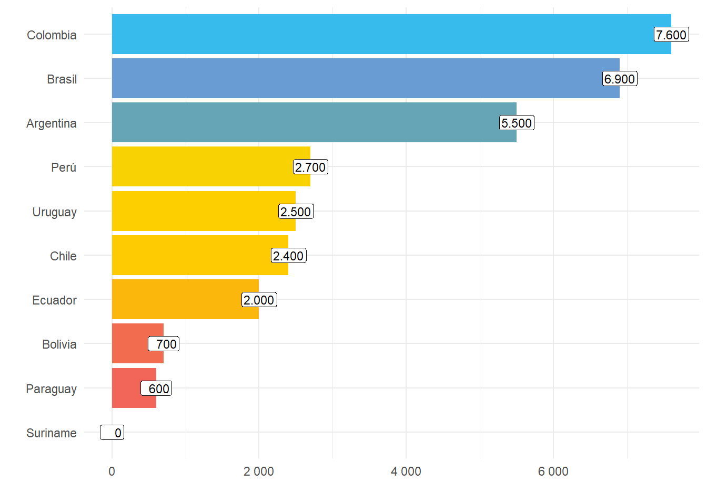Figura 1.17: América del Sur: Ingresos por turismo internacional. En millones. Años 2005-2023.
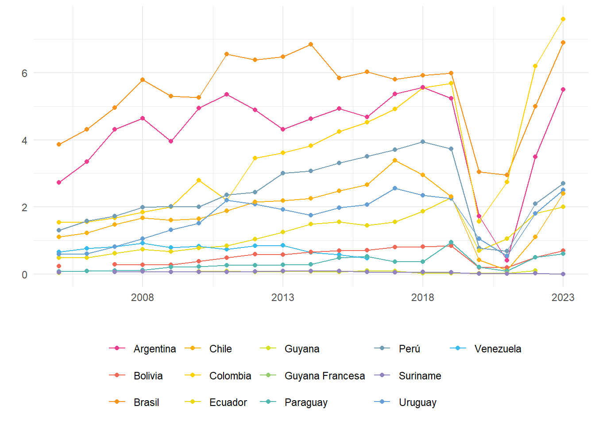